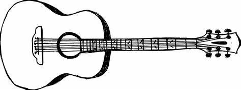
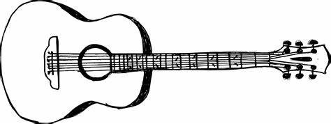
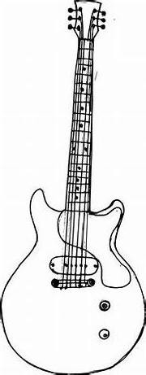
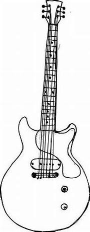

GUITAR CHORDS
Welcome to our interactive and free guitar chord library tool! Your online guide to the world of
guitar chords.
Designed to help musicians of all levels, this tool simplifies the process of learning and playing
chords by offering guidance on names, finger placements, quality, and more!

Using The Chord Library

The chord identifier is a multifaceted tool, built with the purpose of simplifying your musical
journey.
It provides several features including the ability to decipher how to play a specific chord based on
its name, offering diverse interpretations, and facilitating instructions on finger placements for
any given interpretation.
Moreover, it aids you in recognizing the notes embedded within a chord and helps to determine the
intervals that exist within it.
 
